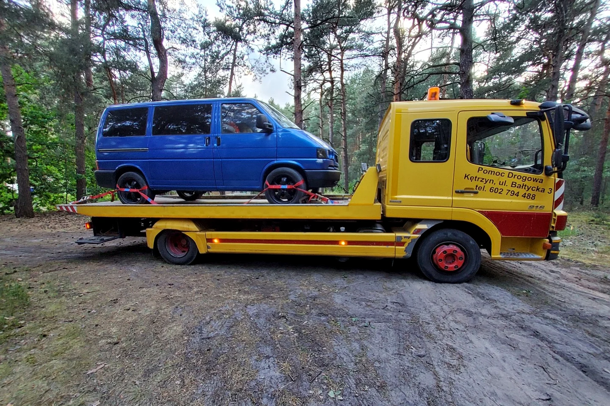

Teraz niebieski też musi iść do warsztatu — 3. i 5. bieg już nie są

Po czerwonym wyświetleniu myślałem, że na razie wykorzystałem limit na awarie. Niebieski najwyraźniej miał inne plany. Tym razem to skrzynia biegów: trzeci i piąty bieg już nie działają. Więc wracamy do warsztatów, a nie do dalszej podróży.
Brakuje dwóch biegów — ale przyczyna pozostaje niejasna
Jeśli poszczególne chody zawodzą, pokusą jest natychmiastowe poszukanie diagnozy w internecie. Zawieszenie, regulacja, łożysko czy coś wewnątrz samej skrzyni biegów — teoretycznie w grze wchodzi wiele czynników. Jednak dopóki pojazd nie zostanie odpowiednio sprawdzony, wskazane jest złożenie konkretnego roszczenia. I właśnie tego nie chcę.
Mogę powiedzieć na pewno: trzeci i piąty bieg nie są użyteczne. Dlatego normalna i niezawodna jazda nie wchodzi dla mnie w grę. Niebieski wszedł na lawetę i wymaga obejrzenia.
Stare uczucie natychmiast wraca
Starszy T4 to coś więcej niż romans i piękne boiska. Wymaga to uwagi, pielęgnacji, a czasem dużo cierpliwości. Kiedy zobaczyłem niebieski na lawecie, wspomnienie czerwonego było natychmiastowe. Oczywiście wiem, że awaria skrzyni biegów nie oznacza automatycznie końca pojazdu. Niemniej jednak strach przed takimi doświadczeniami jest głęboki.
Dlaczego pokazuję tę stronę Vanlife
Na Instagramie często można zobaczyć gotowy obóz nad jeziorem. Laweta mniej pasuje do wymarzonego świata, ale pasuje równie dobrze. Jeśli podróżujesz starym autobusem, nie musisz samodzielnie naprawiać wszystkiego. Jednak powinieneś rozpoznać, kiedy kontynuowanie nie jest już dobrym pomysłem i być szczerym co do stanu pojazdu.
Teraz czekam na diagnozę. Mam nadzieję, że Niebieski wkrótce znów znajdzie wszystkie korytarze. A jeśli nie, to ta część historii — nieupiększona, bez wymyślonego heroizmu i z narzędziami, gdzie jej miejsce.
Do zobaczenia wkrótce i życzę udanej podróży,
twoja nazwa Tussy 💛